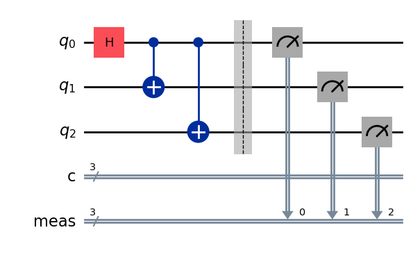
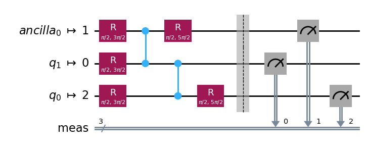

Quick Start#
In addition to quantum circuit execution IQM Client allows the user to build and execute pulse-level instruction schedules on a quantum computer. Within the existing IQM QCCSW stack, this pulse-level access is somewhere between circuit-level execution and dedicated calibration experiments. Namely, with pulse level access the user can:
compile a quantum circuit (e.g. from Qiskit) into an instruction schedule on the client side
access and modify the calibration data to be used for the circuit-to-schedule compilation
view and modify the default implementations of quantum gates, using e.g. custom pulse shapes
define custom implementations of quantum gates
define new composite gates out of native gates and set their calibration data
control the multi-step compilation procedure, and edit the intermediate data
construct instruction schedules manually
This notebook contains a small meaningful example for a “quick start”. Refer to other chapters for more details on various aspects of pulse-level access.
Authentication#
The preferred way to provide the connection and authentication information to IQMClient is using environment variables.
IQMClient connects to the quantum computer using the URL in the environment variable
IQM_SERVER_URL.IQM Server uses bearer token authentication to manage access to quantum computers. Get your personal token from the IQM Server web dashboard and store it in the environment variable
IQM_TOKEN, where IQMClient will find it.For IQM Server instances that manage more than one quantum computer you need to also provide the name of the quantum computer in the environment variable
IQM_QUANTUM_COMPUTER.
Alternatively, the connection and authentication information can be provided as environment variables set inside the notebook using
import os
os.environ["IQM_SERVER_URL"] = "<IQM Server URL>"
os.environ["IQM_QUANTUM_COMPUTER"] = "<quantum computer name>"
os.environ["IQM_TOKEN"] = "<your API token>"
However, this is not recommended since this way it is easy to accidentally expose your API token e.g. when giving a presentation or by committing the notebook with the API token to a shared code repository.
Using pulse-level access with IQM Resonance#
Pulse-level access is also available on the IQM Resonance cloud service. You need to set IQM_SERVER_URL to point to Resonance (https://resonance.iqm.tech), and specify the quantum computer to use in IQM_QUANTUM_COMPUTER.
The names of the available quantum computers can be found on the Resonance dashboard.
from qiskit import QuantumCircuit, visualization
from qiskit.compiler import transpile
from iqm.iqm_client.util import print_env_vars
from iqm.qiskit_iqm import IQMProvider
from iqm.qiskit_iqm.pulse_level_utils import sweep_job_to_qiskit, qiskit_to_iqm
print_env_vars()
# Create a qiskit-iqm backend for accessing the quantum computer, containing an IQMClient instance.
# Calling IQMProvider.get_backend() will initialize the required IQMClient instance from environment
# variables by calling IQMClient.from_url().
provider = IQMProvider()
backend = provider.get_backend()
iqm_client = backend.client
# Define a quantum circuit.
qc = QuantumCircuit(3, 3)
qc.h(0)
qc.cx(0, 1)
qc.cx(0, 2)
qc.measure_all()
qc.draw(output='mpl')

# Transpile the circuit using Qiskit
qc_transpiled = transpile(qc, backend=backend, layout_method='sabre', optimization_level=3)
qc_transpiled.draw(output="mpl")

# Convert it into IQM format
circuits, compiler = qiskit_to_iqm(backend, qc_transpiled)
# Set the number of shots
shots = 100
settings = compiler.get_settings(circuits=circuits)
settings.set_shots(shots)
# Compile the circuit into a job definition containing a playlist of instruction schedules.
run_definition, context = compiler.compile(circuits, settings=settings)
# IQMClient.submit_playlist() returns an object that tracks the state of the job on the server.
# The measurements are obtained using job_tracker.result() after job_tracker.wait_for_completion().
job_tracker = iqm_client.submit_playlist(run_definition, context=context)
job_tracker.wait_for_completion()
qiskit_result = sweep_job_to_qiskit(job_tracker, shots=shots)
print(f"Raw results:\n{job_tracker.result().circuit_measurement_results}\n")
print(f"Qiskit result counts:\n{qiskit_result.get_counts()}\n")
visualization.plot_histogram(qiskit_result.get_counts())
# Convert it into IQM format
circuits, compiler = qiskit_to_iqm(backend, qc_transpiled)
# Set the number of shots
shots = 100
settings = compiler.get_settings(circuits=circuits)
settings.set_shots(shots)
# Compile the circuit into a job definition containing a playlist of instruction schedules.
run_definition, context = compiler.compile(circuits, settings=settings)
# The results should be comparable to a direct circuit execution through IQM Server.
print("Executing the same circuit via the Qiskit backend...")
iqm_job = backend.run(qc_transpiled, shots=shots)
print(f"Qiskit result counts from IQM Server:\n{iqm_job.result().get_counts()}")
visualization.plot_histogram(iqm_job.result().get_counts())
Schedule visualization#
IQM Pulse comes with a schedule visualizer. It takes a Playlist (i.e. a compressed list of instruction schedules) and a list of schedule/segment indices to inspect.
The playlist variable below is the one which we derived from the original Qiskit circuit using the IQM circuit-to-pulse compiler, and it only has one schedule.
from iqm.pulse.playlist.visualisation.base import inspect_playlist
from IPython.core.display import HTML
HTML(inspect_playlist(run_definition.sweep_definition.playlist, [0]))